| |
Pyrenees Review
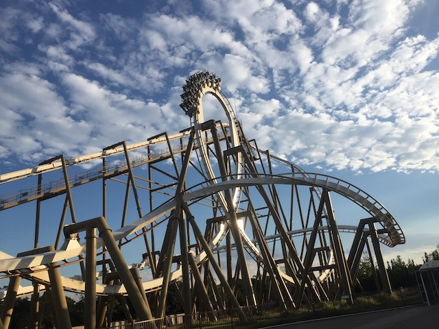
We're here at Parque Espana to ride Pyrenees. This is the parks B&M Invert. And due to the fact that this park is out of the way for most enthusiasts, Pyrenees tends to get overlooked when people talk about the great B&M Inverts. Well, let me tell you this. This isn't just one of the great B&M Inverts. No. This is their best one! This ride is freaking awesome! And considering how there's only one B&M Invert that's widely considered to be one of their great ones that I still need to ride (Nemesis @ Alton Towers. I really need to hit the U.K within the next few years), there's a really good chance that Pyrenees is the best B&M Invert in the world! It's already one of my favorite B&Ms ever as well as the best B&M in Japan (and considering how amazing Flying Dinosaur is, that's REALLY saying something). So with that out of the way, let's hop on board. We get in the cars, pull down the restraints, which have some sort of thing on them. I don't know what it is or why it's there, but it doesn't affect the ride. So we'll ignore them. And we're off! We start climbing the lifthill. It's a pretty big climb. And if you look around, you get a really nice view of Parque Espana and just the city of Shima in general. Eventually, we reach the top, head down the pre-drop, and then head down the first drop. This is REALLY good. It's a standard curved first drop, except....I think it's a little steeper than usual on Pyrenees. So you pick up A LOT of speed and pull a lot of Gs. Probably one of the best B&M drops that isn't a dive machine, hyper, or giga coaster. We then roar through the first vertical loop. It's a pretty big loop. But you honestly wouldn't know that if your eyes were closed as we go through this loop without losing much speed. We just roar right through it. We then rise up into the heartline spin. And man is this a powerful one. Seriously, this thing is damn near Montu strong. It has a LOT of whip to it. And before we know it, we drop back down and go through yet another vertical loop. Wait. Curved First Drop? Vertical Loop? Heartline Spin? 2nd Vertical Loop? This is a giant Batman clone! And it's not only as fast as a Batman clone, but it's much stronger than one too. Seriously, this thing is essentially Batman on steroids. And look at that. We're already out of the 2nd vertical loop. Very forceful. We go through a low to the ground curve, and at our speeds, we're gonna be getting ourselves some seriously sweet laterals. And then we go into the cobra roll. Again, this thing is seriously powerful, rise upsidedown, snap out of the first half. Snap upsidedown back into the second half, and roar back down to the ground. We then go through a little bit of a curved section, but this part mainly just acts like straight track to get us to the next crazy element. The only breather moment on the ride. And this of course, gets us into the helix. It doesn't look like much, just a small little helix. THIS THING IS F*CKING POWERFUL!! It's damn near Goliath strong. You get A LOT of Gs here. And from here, we hit the midcourse brakes. Except....these barely act like mid course brakes. It's mainly just a bit of straight track with a little trim. And then BAM!!! We have to talk about the drop off the midcourse brakes! I mean, everything in the first half is great, but also to be expected. What I did not expect was how good the drop off the midcourse brake is. It mostly looks like a standard straight drop. But in actuality, it curves a little before dropping down. And because the midcourse barely works, we get some speed going into it. That curve catches us off guard, and we get some nice laterals, before getting a nice pop of airtime as we drop to the ground and gain more speed. Without a doubt, the most underrated part of the ride. We then go and tumble through the first corkscrew. Very strong. Has a lot of whip to it. We then head around a turn and....awww. Straight track. =( Wait. Why are we gaining speed? Actually, that's not straight track. It's just a very gradual drop. Hey, I normally don't like gradual drops, but here, it catches you off guard. =) We then head into a bunny hop over the non-existant line. It's not a super strong bunny hop, but there still is a moment of floater air, and that's fun. We then head into a sharp helix-like turn that gives us some good laterals. And sadly, the ride is over now. DAMN!!! This is a STRONG one. B&Ms best Invert, Best B&M in Japan, one of their best coasters ever, and just a really great fantastic ride. I know if you're a coaster enthusiast who's got Parque Espana on their itenerary, it's because of this ride. But....make sure you hit Parque Espana and ride Pyrenees when doing a Japan coaster trip. Cause DAMN!!! This ride is so good! =)
9/10
Location: Parque Espana
Opened: 1997
Built by: B&M
Last Ridden: October 30, 2018
Pyrenees Photos
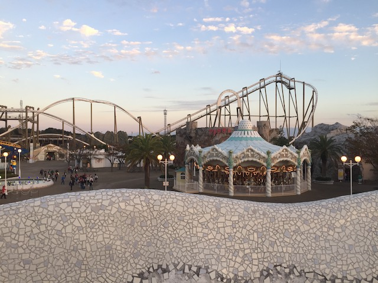
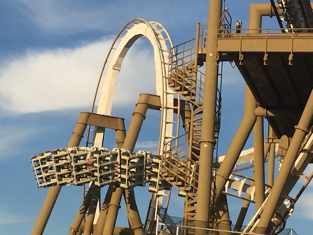
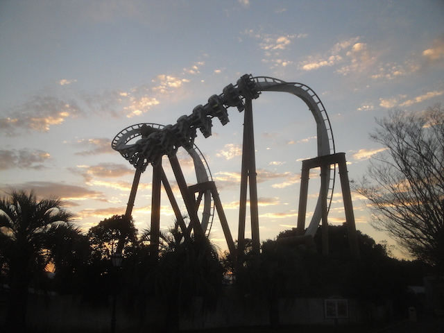
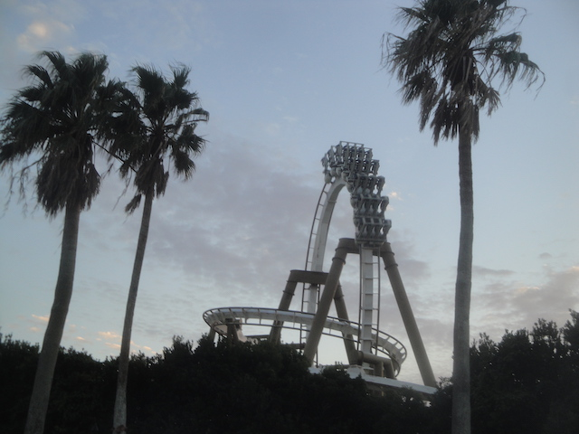
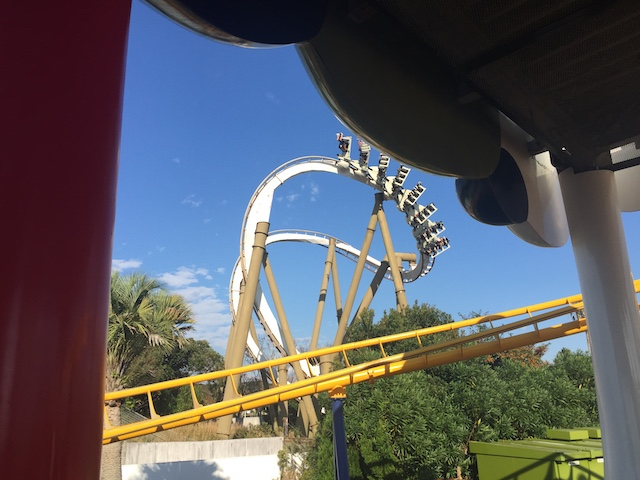
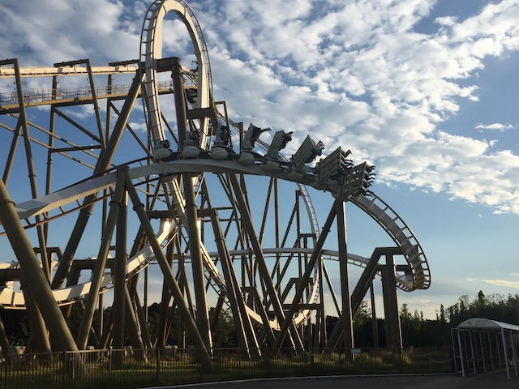
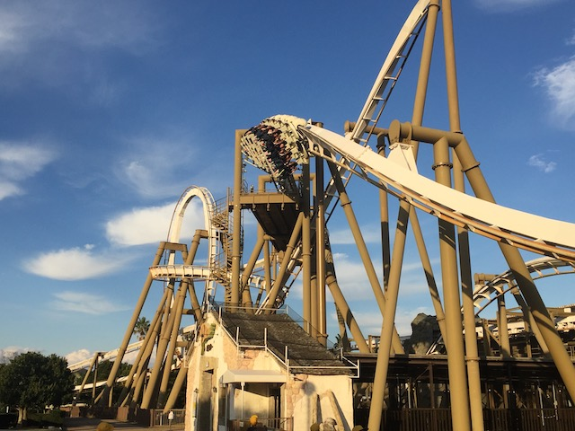
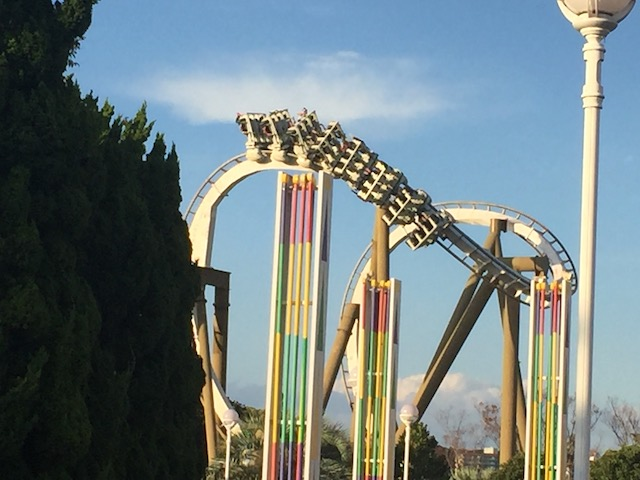
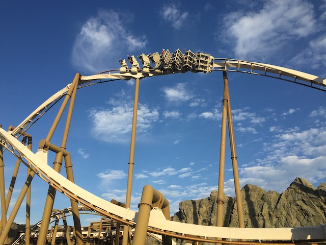
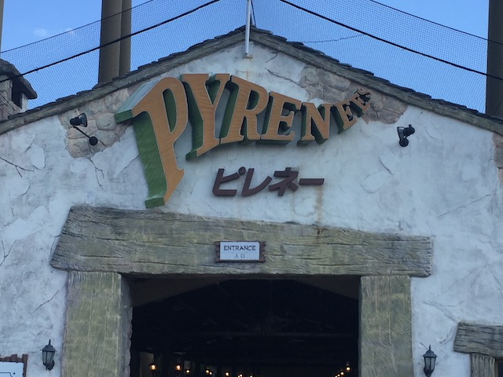
Home
|